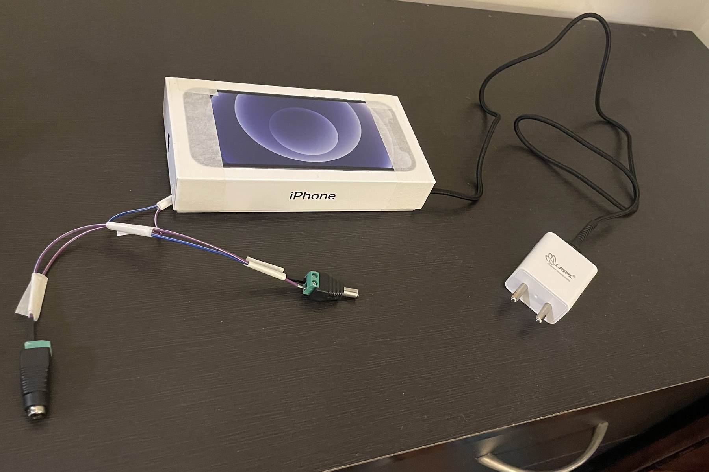
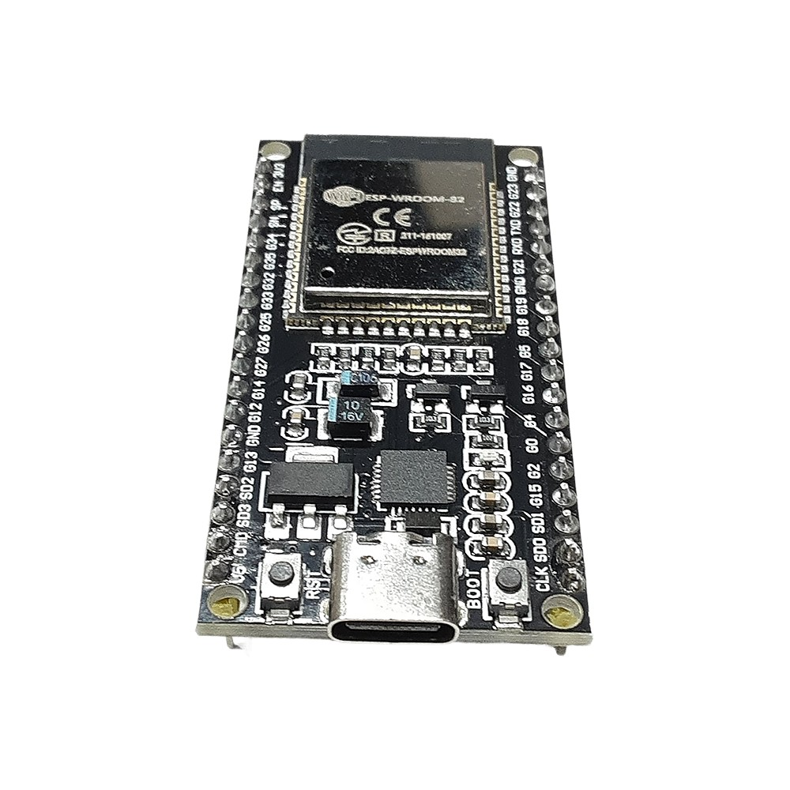
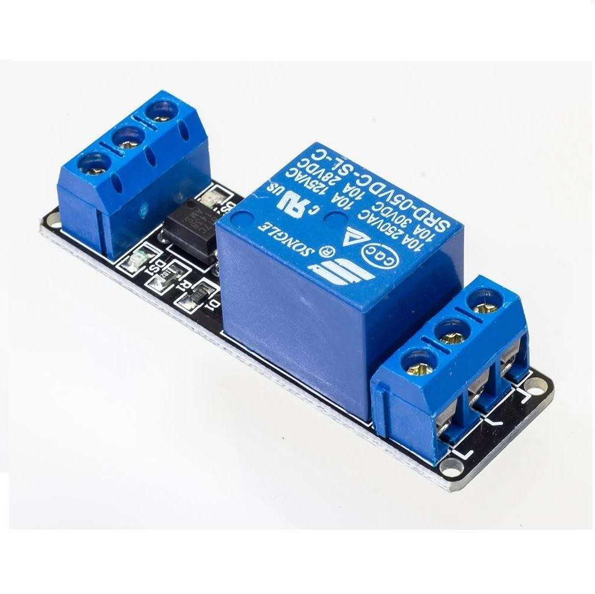
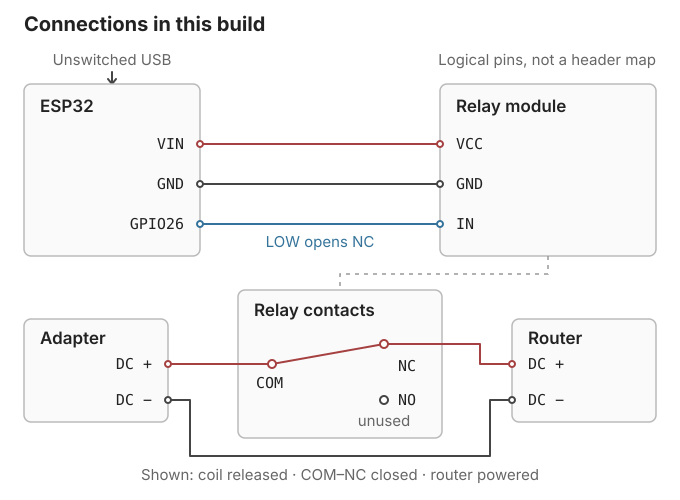
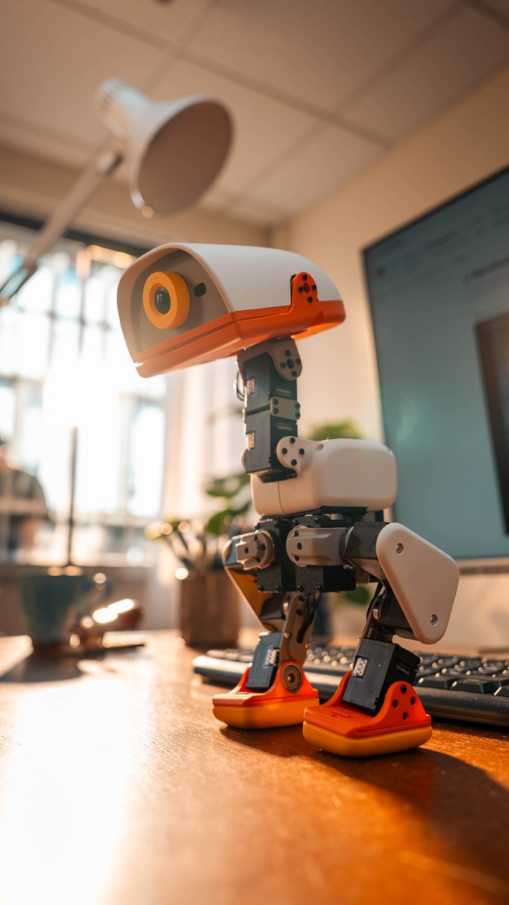
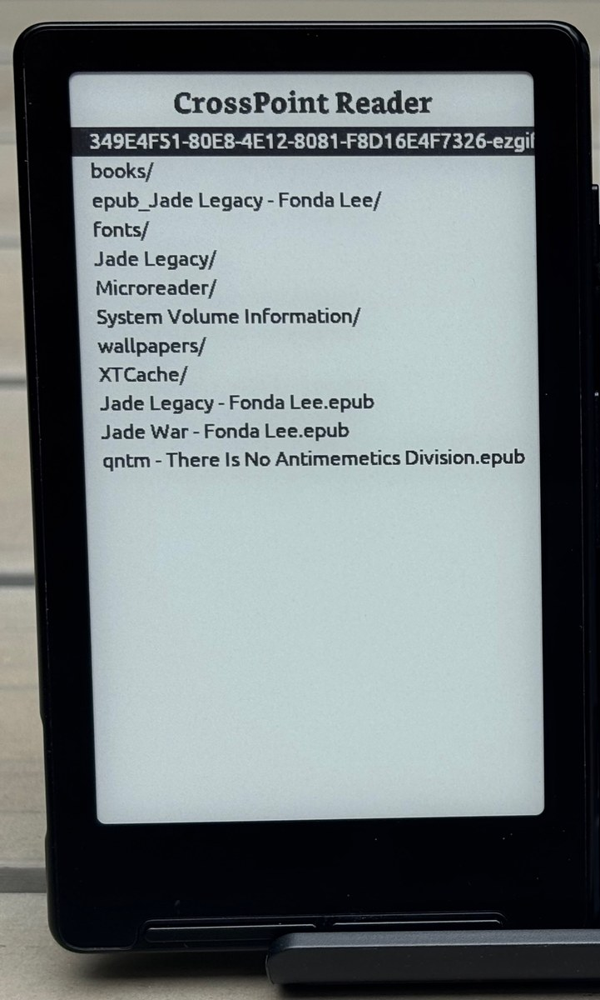

My router needed the occasional restart to keep the internet working. So instead of replacing it or talking to the ISP, I did what a normal person would do: built an ESP32 watchdog.
The ESP32 is a small board with Wi-Fi. It checks the internet connection and uses a relay to briefly cut the router’s power if those checks keep failing. Then it turns the power back on and gives the router time to boot. The ESP32 has its own USB supply, so it doesn’t switch itself off in the process.

I wanted to avoid soldering and keep the whole thing easy to put together and take apart. So I used ready-made modules, jumper wires and screw-terminal connectors. The relay sits between the router and its power adapter, on the low-voltage DC side. The router itself doesn’t need any changes.


Wiring diagram

I didn’t want this thing to become another reason the internet was down.
It waits five minutes when it starts, because the router may still be booting after a power cut. After that, its checks have to keep failing for three continuous minutes before it tries a restart. It’s set to cut power for 30 seconds, followed by another five minutes for the router to boot.
It remembers if it has already tried, even if the ESP32 itself restarts. If the connection stays down, it leaves the router on. There’s not much point restarting it all afternoon if the ISP is down.
A very patient power switch
ILLUSTRATION- 01 / WAIT3 min
- 02 / POWER OFF30 sec
- 03 / BOOT5 min
- 04 / CHECKAgain
It felt really nice to work on electronics again. The last thing I’d built was an obstacle-avoiding robot in 2015, in my first year of college. I’d forgotten how much I enjoyed doing this.
Getting the parts is easier now too. I can order what I need and have it delivered in two days. Back in college, I had to think a lot more about what I could afford.
AI agents helped with the network troubleshooting, firmware and tests. I could also talk through things like what should happen after a power cut, or what to do if a restart didn’t help. I still had to wire it up and check it on the hardware, but I didn’t have to figure out every part from scratch.
This feels like early Android
I think we’ll see a lot more small, programmable hardware soon. There’s already Pollen Robotics’ Microduck, a robot you can train and program, and ESP32-based e-readers running community firmware like CrossPoint. What interests me is being able to buy a device and keep changing what it does.


This reminds me of building on Android in the early days. The phone already had a screen, sensors and an internet connection. If I had an idea, I could write an app and try it out on my own phone.
I think a Play Store for this kind of hardware is on the cards. You’d buy a device, then install a new behaviour for your robot or a different reading app on your e-reader. Getting that to work across different hardware will be messy, but I’d like to be able to use what someone else has built without doing the whole thing again.
For now, my contribution is a box that restarts another box.
The day after I installed it, the internet went out. I got up and started walking towards the router to power-cycle it. Muscle memory.
Then I heard the relay click.
I stopped and watched it do the job. The router restarted, and the internet came back.
A surprisingly soothing sound.